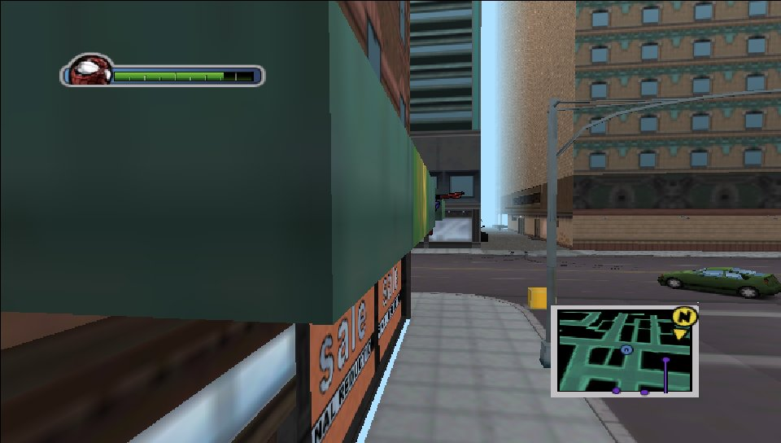
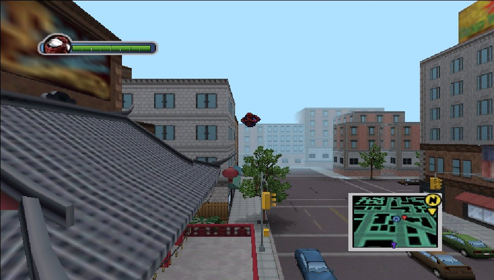
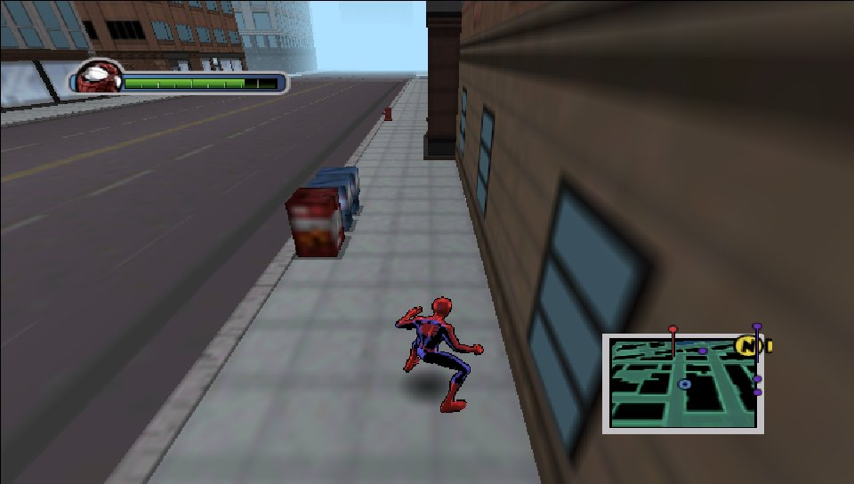
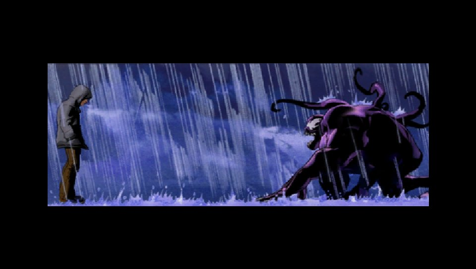
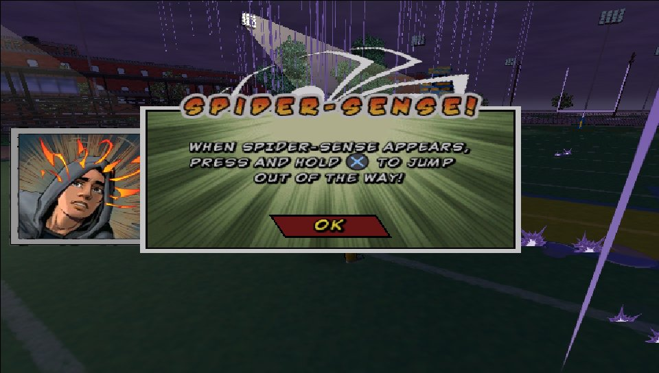
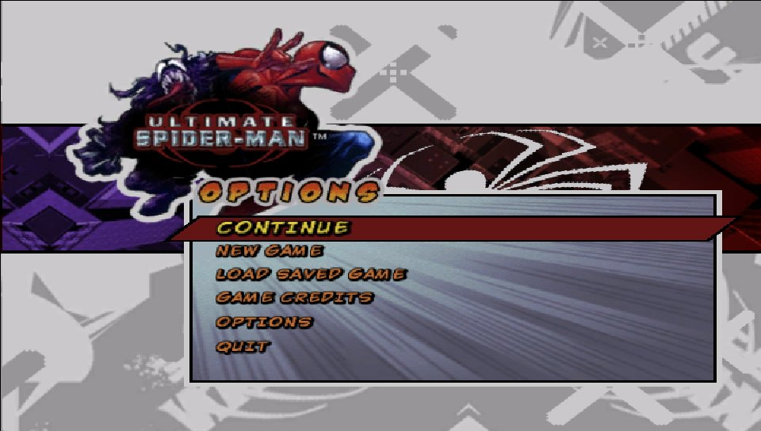

What is this?
This is a port of the PC version of Ultimate Spider-Man to the PS Vita. It isn't an emulator: the PC game's program was translated, instruction by instruction, into C code that is compiled for the Vita's ARM processor (static recompilation, the same idea as N64Recomp or XenonRecomp). Windows, Direct3D 9, DirectSound and the controls are re-created underneath it, and the graphics are drawn with vitaGL.
The VPK contains no game data: the city, characters, sound and movies are read from your own PC game files.
The whole game
Story missions, free roam, city goals, Venom, the comic-panel cutscenes and the movies, played from the game's own files.
Made for the Vita
16:9 screen, Vita button icons in every prompt, sound and music, and saves on the memory card.
Tuned for speed
Uses a second CPU core for drawing, fog that hides the far city, and settings that trade detail for frame rate.
Settings menu
A Settings button on the LiveArea lets you change traffic, view distance, resolution and more, without editing files.
Screenshots






Captured from the port's own renderer (the Vita code running in a PC test build), at the Vita's 960×544.
What you need
- A PS Vita or PS TV that can run homebrew (HENkaku / Ensō), with VitaShell.
- libshacccg.suprx in
ur0:data/: the shader compiler every vitaGL game needs. If you've played another vitaGL port you already have it; otherwise follow the extraction guide. - Your own copy of Ultimate Spider-Man for PC (the 2005 Activision release): its
USM.exeand itsDatafolder. - About 1.5 GB free on
ux0:for the game files.
How to install
-
Download the VPK
Get
usm.vpkfrom the latest release. -
Install it
Copy
usm.vpkto your Vita (FTP or USB in VitaShell), then open it in VitaShell and install it. -
Copy your game files
From the folder where the PC game is installed, copy
USM.exeand the wholeDatafolder intoux0:data/usm/. It should look like this:ux0:data/usm/ ├── USM.exe └── Data/ ├── movies/ ├── packs/ ├── Sound/ └── ...Copy the files exactly as they are: no conversion, the movies too.
-
Play
Start Ultimate Spider-Man from the LiveArea. If
USM.exeor the shader compiler is missing, the game tells you on screen.
ux0:data/usm/shadercache/.Controls
| Button | Action |
|---|---|
| Left stick | Move |
| Right stick | Camera |
| ✕ | Jump |
| □ | Punch |
| △ | Kick |
| ○ | Wall crawl |
| R | Web swing |
| L | Web zip |
| Rear touchpad | Camera lock (R3 on PC) |
| L / R | Quick-time events (left / right click on PC) |
| Start | Pause |
| Select | City map |
| D-pad | Menus |
Settings
Press Settings under the start button on the game's LiveArea page. Pick a line with the D-pad up/down and change it with left/right. ✕ saves and quits, ○ quits without saving, △ restores the defaults. Start the game normally afterwards.
| Setting | What it does |
|---|---|
| People and traffic | How many pedestrians and cars. The biggest speed setting; the default is very low. |
| View distance | How far you can see before the city fades into fog. |
| Resolution | Size of the 3D picture, scaled to the screen (default 720×408). |
| Texture size | Largest texture kept: sharper, or lighter on memory. |
| Far characters | Characters far from Spider-Man animate every other frame, which helps in crowded fights. |
| Far objects | How far the game still prepares objects it won't show. |
| Frame rate cap | A steady 20/25/30 fps can feel smoother than a varying one. |
| Debug options | Log file, culling and second-core switches, frame dumps: for reporting bugs. |
Performance & known issues
The Vita has much less CPU power than the PCs this game was made for, so expect roughly 18–30 fps. Swinging through the city usually runs at about 20–25, smaller interiors reach 30, and big fights with many enemies can drop lower.
- Short hitches can happen while new parts of the city stream in, mostly just after a mission ends.
- People and traffic are kept low by default. Raising them in Settings costs a lot of speed.
- The far city is hidden in fog to keep the frame rate up. Set the view distance to Everything if you prefer the full skyline.
Found a bug? Turn on DEBUG: write log.txt in Settings, play
until it happens, then attach ux0:data/usm/log.txt to an
issue.
How it works
The translator reads every function of the PC game's program and writes equivalent C code, which is then compiled for the Vita. A runtime underneath stands in for the PC: the Windows calls, Direct3D 9 (turned into vitaGL calls, with the game's shaders translated to the Vita's), DirectSound, DirectInput, and the Bink movie player (FFmpeg's Bink decoder). Some of the busiest code was rewritten by hand, and the drawing runs on a second CPU core while the game works out the next frame.
Building it yourself: see the
README. The translation is generated from your
own USM.exe.